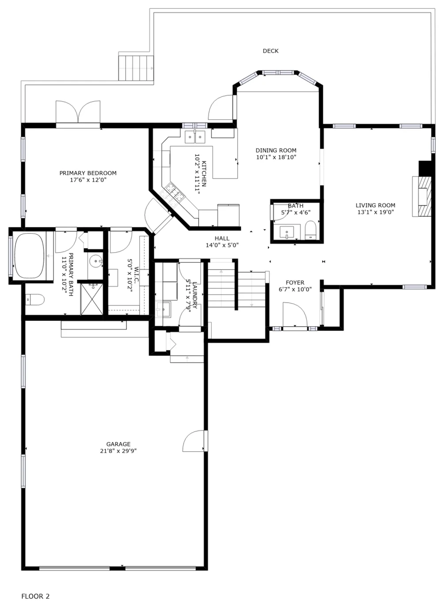
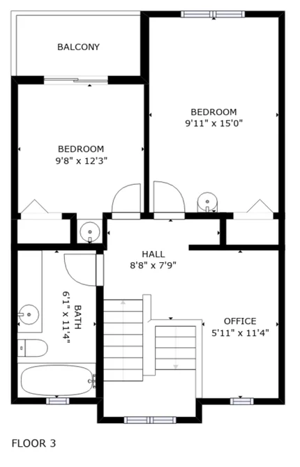

ORIGINAL MATTERPORT MLS DRAWING
Three levels, with current room-use notes.
The source drawing is preserved unchanged. The next page explains how the rooms are currently furnished and used; dimensions remain approximate.

CURRENT FURNISHING NOTES
How the rooms actually live.

Floor 1 · Basement
Shiplap room: shown as Recreation Room on the MLS plan; furnished with a pull-out sofa and TV and used as a sleeping room.
Bedroom by mechanical/electrical: furnished with a bed.
Rear room: shown as Bedroom on the Matterport drawing but without a closet; the purchase records treat it as non-conforming. It is Brandon’s office, furnished with a desk and futon.

Floor 2 · Main Level
Primary/master bedroom: the home’s nicest bedroom.
The level also contains the living room, kitchen, dining room, 1.5 baths, laundry, garage and deck.

Floor 3 · Upstairs
Both upstairs bedrooms: each is furnished with double bunk beds.
This level also includes the plan-labeled office, bathroom and balcony.
Why the drawing shows five “Bedroom” labels: the purchase MLS/inspection records count four bedrooms. The rear basement room is plan-labeled Bedroom but is non-conforming because it lacks a closet; it is one flex room. The plan-labeled Recreation Room is the second furnished flex/sleeping room.